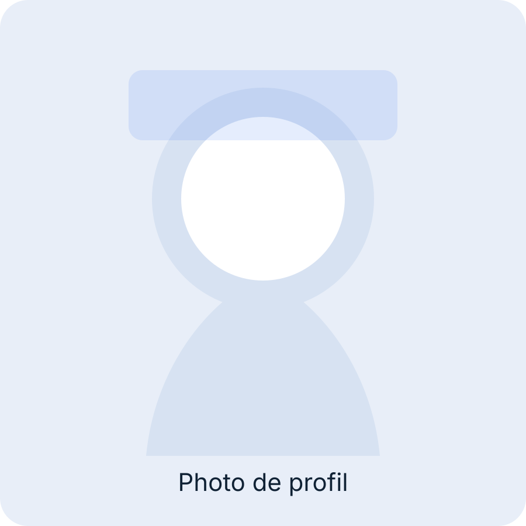
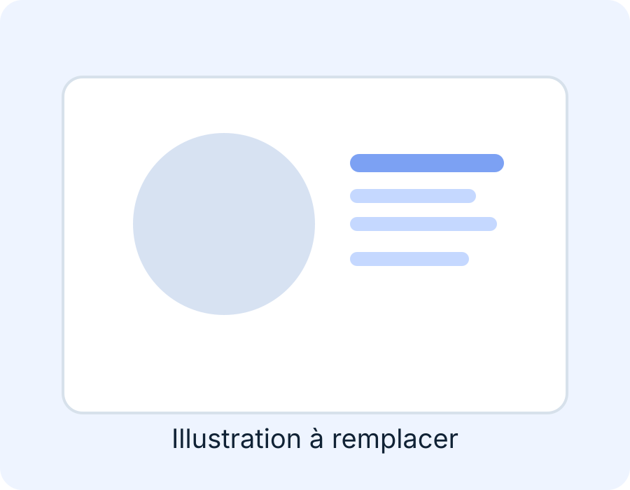
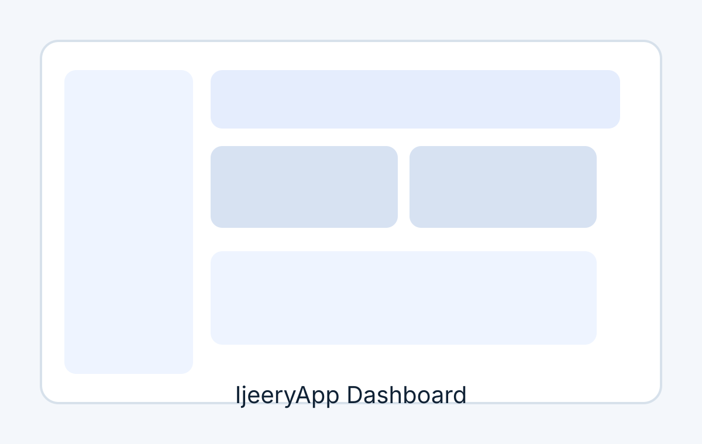
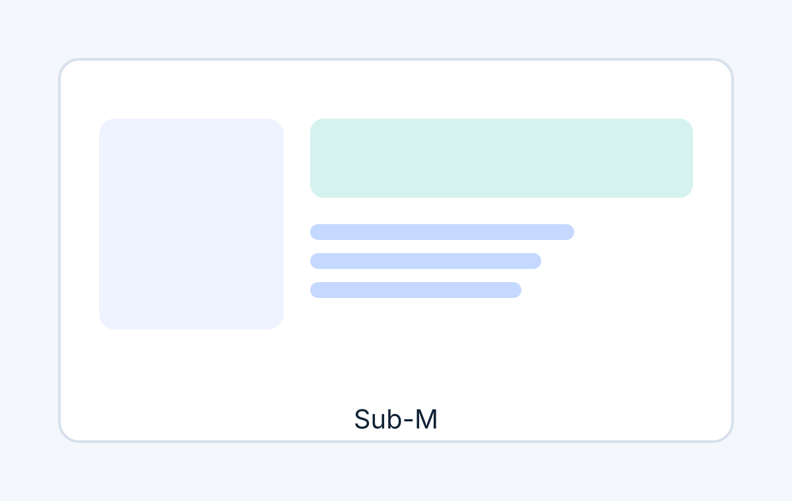

2026 – Aujourd’hui
Fondateur • CEO • Développeur — Baia Creative Solutions
Développement web et desktop, création de sites vitrines, design graphique et assistance numérique.
Développeur Web & Desktop • Fondateur de Baia Creative Solutions
Génie informatique, applications web et desktop sur mesure, design numérique et accompagnement de projets concrets.


À propos
Mes projets ont commencé dans le cadre universitaire avec HTML, CSS, JavaScript, Bootstrap, PHP, C/Gtk, Java et C++/Qt, puis j’ai renforcé mon expérience en entreprise chez DDS avec Java SE et Spring Boot.
Aujourd’hui, je suis fondateur et CEO de Baia Creative Solutions, une structure dédiée à la création de sites vitrines, d’applications desktop et d’assistance digitale.
Mon parcours inclut aussi une mission internationale de service bénévole au Bénin et au Togo, qui a renforcé mon leadership, mon adaptabilité et ma communication interculturelle.
De nouveaux défis professionnels me permettant de progresser dans mon domaine, en priorité en télétravail, ouvert à l’hybride.
Compétences
Expériences
2026 – Aujourd’hui
Développement web et desktop, création de sites vitrines, design graphique et assistance numérique.
2023 – 2025
Communication interculturelle quotidienne, organisation d’activités et accompagnement de personnes et familles.
2021
Analyse des besoins, développement d’applications, conception d’interfaces et contribution au back-end.
2019 – 2023
Création d’interfaces modernes, intégration responsive, maintenance et collaboration client.
Projets phares

Python • PostgreSQL • ERP
ERP desktop pour automatiser et centraliser les opérations d’un grossiste, avec modules stock, ventes, caisse et reporting.
Voir le détail
Java SE • Desktop
Application de gestion de service de distribution d’eau potable avec suivi des abonnés et des opérations.
Voir le détailBientôt
Application de gestion de restaurant à venir, avec une logique métier pensée pour les équipes opérationnelles.
Formation
Certifications
Bénévolat
Mai 2023 – Mai 2025 • Accompagnement de personnes et familles, coordination d’actions terrain et travail interculturel.
Depuis décembre 2025 • Accompagnement et coordination de bénévoles au sein d’un conseil communautaire.
Contact
Disponible pour des missions freelance, des collaborations à distance et des projets à moyen terme.